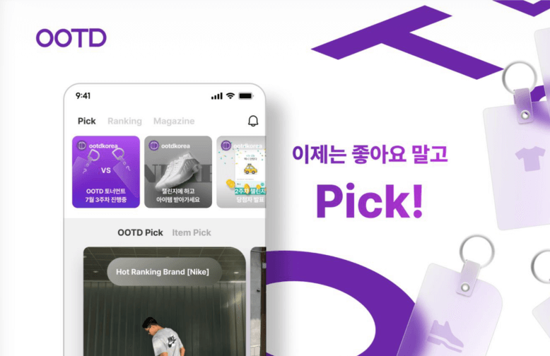
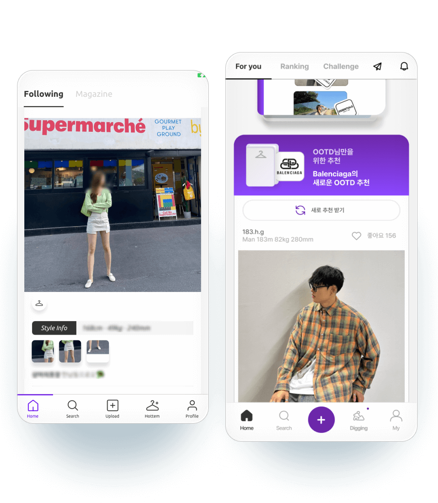
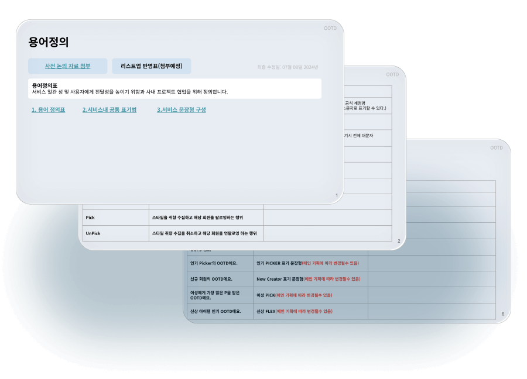
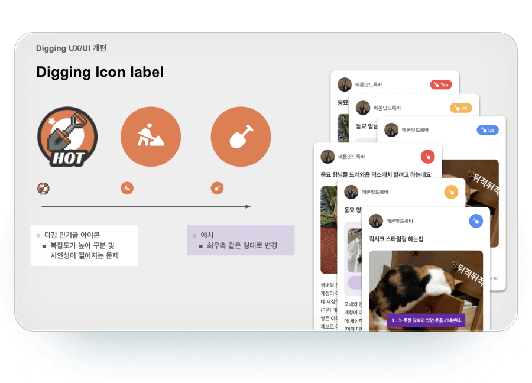
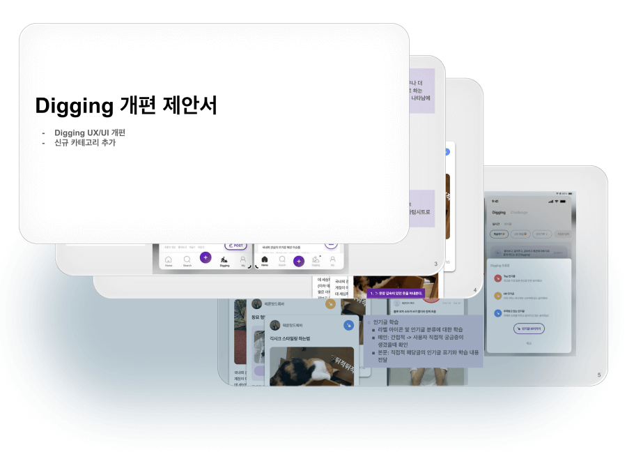
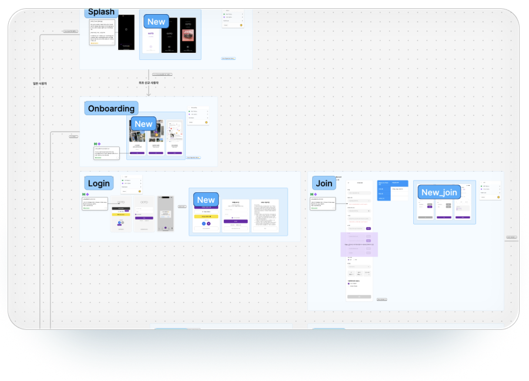
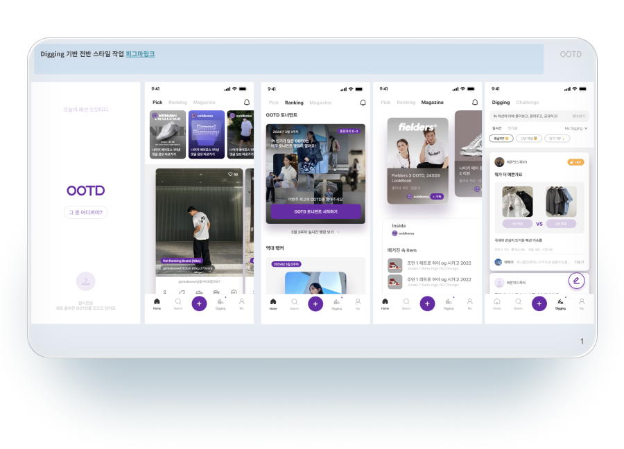

-
회사 주식회사 오*** 직급 디자인팀 팀장
담당 UX/UI,웹프론트
정보 상용완료, flutter
팀원 flutter 개발1, 서버1, 운영1, 기획1, 본인 (총 5명)
프로젝트 진행기간 주단위로 진행About
의류 판매는 하지 않는 사용자 패션데이터 위주의 패션SNS플랫폼입니다. 초기 입사 후 서비스명칭과 UX가 일치하지 않는부분이 많이 용어정리 및 플로우 개선 작업을 먼저하고 후에 리뉴얼 작업을 진행 했습니다.
1Step 용어정리,서비스 파악,플로우 개선2Step 디자인 시스템화 및 리뉴얼3Step 작업 진행 및 QA목적 기존 UX 재정의 및 리뉴얼
목표 기존 서비스 UX개선(좌 기존, 우 리뉴얼)
작업 미리보기 기존 디자인 리뉴얼 작업 초기 산출물
용어정의
기존 버튼 명칭과 서비스명칭이 일치하지 않는 부분이 있어 프로젝트 초반 우선적으로 용어정리를 진행하였습니다. 용어정리표를 토대로 기존 서술된 서비스문구의 톤정리 작업도 함께 병행하였습니다. "입니다." "가요!" 같은 말투부분을 서비스 구성에 맞게 분리 및 조정하였습니다.
용어정의 및 서비스 문구표 일부
커뮤니티 서비스 개편
커뮤니티 개선 제안서 일부
기존 커뮤니티 UI가 일관성이 떨어져 표기UI의 일관성을 높이고 각 타입에 따른 차이를 두어 분류되도록 재정의했습니다. 기존 좌측 아이콘에서 우측 아이콘 3단계 형태로 변경
커뮤니티 개선 제안서 일부
서비스 플로우
전체 서비스 파악 및 기존 용어정리를 위해 모든 스크린 플로우를 파악하고 문제점이 있는 포인트를 체크하여 백로그로 작업이 진행될수 있도록 분류했습니다.
스크린 플로우 일부
디자인 리뉴얼
기존의 전체적으로 많이 들어가 있던 컬러를 모두 빼내고 메인컬러 위주의 시각적 우선순위 배정으로 전체 리뉴얼 작업을 진행했습니다. 모든 UI는 컴포넌트화하여 일관성을 유지할수 있도록 재사용했습니다. 개발 반영 작업은 순차적으로 상용으로 바로 진행되었으며 주간위로 페이지별 진행되었습니다.
1차 리뉴얼건


- 패션 SNS
- 2024